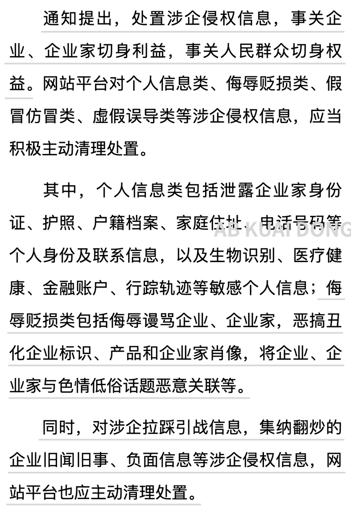
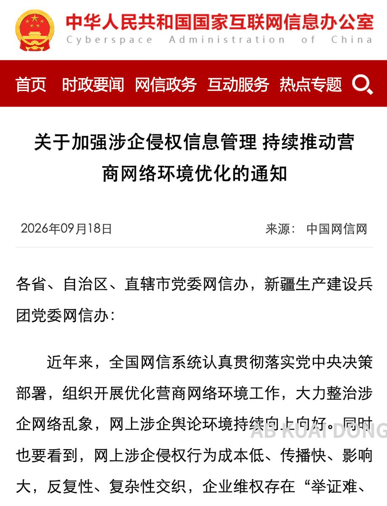

Wilf Lin
@Wilf_Lin
美国的处理方法就愚蠢的多了，他们的最高法在《纽约时报》诉L.B.沙利文案中认定这类行为属于宪法第一修正案赋予的权利。


AB Kuai.Dong
@_FORAB
这次算是网信办发文定调了，要求人们不能随意辱骂、拉踩、恶搞企业家，也不能对企业的负面历史、旧闻旧事进行重复炒作。
而且这次特意标注了，禁止涉企拉踩引战信息，要求各平台对以上这些主动清理处置。
哇哇哇这个这个，这么好怎么不早点告诉我，不知道以后是否还能看到了。 https://t.co/1D6TcyZl2t